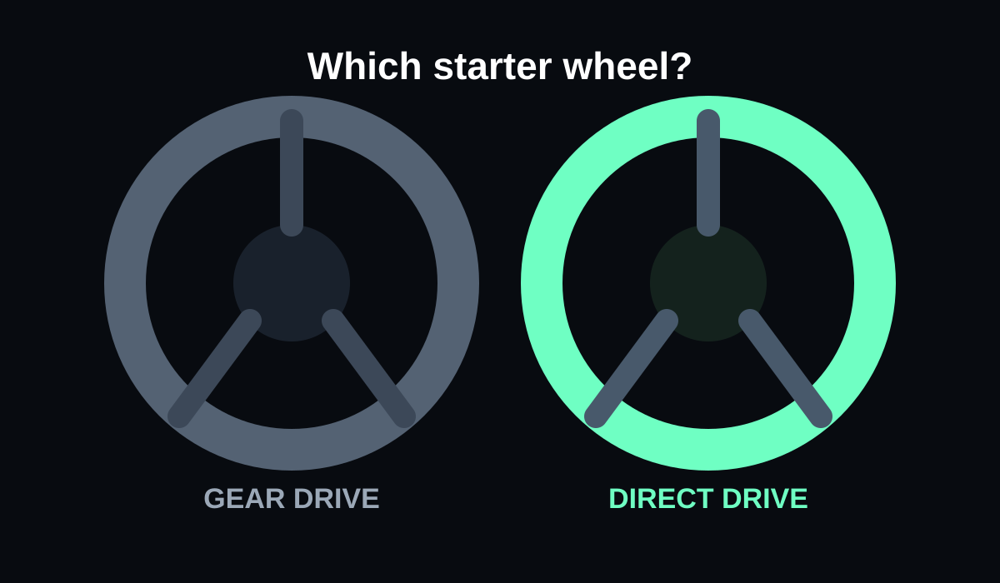

For PC, the MOZA R5 Pro is the stronger long-term buy if the budget stretches to it: 6 Nm direct drive, a 21-bit encoder, quick-release wheel and included desk clamp put it in a different performance class. The G923 remains easier to recommend when straightforward PlayStation or Xbox support and a three-pedal starter set matter more than force-feedback strength.
- You are on PC and want a meaningful direct-drive step
- You want a modular ecosystem
- You can accept a two-pedal starter set initially
- You need the G923's straightforward console support
- A clutch pedal in the box matters more than force-feedback strength
- You are buying direct drive for a desk that cannot hold it securely
Key specs & facts
| MOZA R5 Pro | 6 Nm direct drive |
|---|---|
| G923 | Up to 2.3 Nm dual motor |
| R5 Pro encoder | 21-bit magnetic |
| Desk use | Both viable with stable mounting |
The biggest difference is the drive system
The R5 Pro is a direct-drive system: the steering wheel is driven directly by the motor. MOZA rates the base at 6 Nm peak torque and pairs it with a 21-bit magnetic encoder and its NexGen 5.0 force-feedback system.
The Logitech G923 uses a dual-motor force-feedback system and Logitech currently lists it at up to 2.3 Nm. TRUEFORCE adds higher-frequency feedback in supported games, but it does not turn the G923 into a direct-drive wheel.
What the torque gap means in practice
Torque is not a complete measure of force-feedback quality, but the difference here is large enough to matter. The R5 Pro has substantially more headroom for steering weight, sharp peaks and detail before the signal reaches the base's limit.
The G923 can still communicate grip changes and road effects, especially in TRUEFORCE titles, but it belongs to the older entry-level wheel class rather than the newer direct-drive class.
Desk setup: both are realistic options
This comparison is relevant to people without a permanent cockpit because both systems are designed to work on a desk. MOZA lists desktop mounting and includes a desk clamp with the R5 Pro bundle. The G923 is built around quick clamp-on desk or table setup.
The more important issue is the pedals. A desk can hold a wheelbase surprisingly well; a hard brake pedal can push a light pedal set or rolling chair across the floor. Plan the pedal position as carefully as the wheel clamp.
Pedals and bundle contents
The R5 Pro bundle includes the ES Lite wheel and SR-P Lite2 two-pedal set. The pedals use contactless Hall sensors and are adjustable, but the standard bundle is still a starter pedal setup rather than a load-cell package.
The G923 includes throttle, brake and clutch pedals. That makes it convenient for someone who wants a complete three-pedal setup immediately, although serious sim racers may eventually want a stronger brake solution on either platform.
Platform support can decide the answer immediately
The G923 is sold in PlayStation-and-PC and Xbox-and-PC versions. That broad console support is still one of its strongest reasons to exist.
The R5 Pro is the more natural fit for a PC-first setup. Console buyers should treat platform licensing as a first filter, not something to solve after the hardware arrives.
Ecosystem and upgrade path
MOZA's quick-release system makes wheel changes simple, and the R5 Pro base has ports for pedals, dash, shifter, handbrake and an emergency stop. That gives it a natural path toward a more serious rig.
The G923 ecosystem is simpler. A Driving Force shifter can be added, but the wheel itself is not designed around swapping rims and building a modular direct-drive system.
Which should you buy?
Buy the R5 Pro if you race on PC, want a system you can grow around and care more about force-feedback quality than getting a clutch pedal in the box.
Buy the G923 if console support, familiar setup and a complete three-pedal bundle matter more, especially when it is heavily discounted.
If you already own a G923, the R5 Pro is a meaningful upgrade rather than a side-grade. If you are buying from scratch on PC, compare the total bundle prices before defaulting to the older Logitech simply because the name is familiar.
Related reading
Also see our G923 vs direct-drive guide, R5 vs R5 Pro comparison and R5 upgrade order.
Standard R5 or R5 Pro?
This page is specifically for the 6 Nm R5 Pro. If the product in your basket is the standard 5.5 Nm MOZA R5, see MOZA R5 vs Logitech G923. That avoids mixing two different MOZA bundles into one price comparison.

Logitech G923
Useful console-friendly comparison point; check current Amazon UK pricing before deciding against direct drive.
Amazon prices and availability change frequently, so we show a current Amazon UK link rather than copying a price that may be stale.

Sources
Key specifications and factual claims are checked against manufacturer or primary-source material where available.
About this article
This page is a researched guide or comparison, not a claim of hands-on testing unless we explicitly say otherwise. Product specifications and availability can change, so important buying details are checked against current source material when the article is updated. Affiliate availability does not determine the underlying recommendation.